As the name implies, OOP uses objects in programming. We start off with a blueprint which is called a “class” in our coding context. Classes are like blueprints in that they form the basic outline for an object, which are its attributes and behaviours. They are set to the access modifier of “public” so that they may be accessed outside of the class. Attributes are the properties of an object to be created, also called instance variables of a class, and behaviours are the functions/methods that use attributes of an object. In the OOP-style, attributes of a class have the access modifier of “private” meaning they are only accessible in their own class, and methods of a class are declared as “public” meaning they can be accessed outside of their corresponding class. An object in OOP will be made using the class it comes from as the class will contain the blueprint for the attributes and behaviours of the certain object you are creating. The “new” keyword is used when instantiating a class by allocating memory for a new object and then sending back a reference which can be accessed through the variable. Inside every class is a class constructor with the access modifier set to public which will be used to set the default values of your object. Class constructors must have the same name as the class. You may have multiple constructors, each with a different number of parameters. When creating an object, it will need an identity, known as an identifier/name, as a reference when accessing its methods. Methods may have a return type of primitive/reference data (int and double are primitive, String is reference) or no return type (void). Class constructors do not have a return type. Usually, methods, where you want to access a specific attribute of a class, will have a return type because they are returning data, and these are called get methods or getters. There are also set methods or setters used to set attributes to different values, usually having no return type as the data may be accessed by a get method. Other names for these methods are accessor methods used to access instance variables of a class, and a method for changing the value of an instance variable is called a mutator method.
Let’s say there is a “Dog” class and the attributes of this class are colour, size, and age (set them to private). We can assign default values to these attributes for every object you make by creating a class constructor, and you may add other class constructor(s) with parameters to set your own values when initializing the object (set them to public). Having multiple constructors is also called constructor overloading.
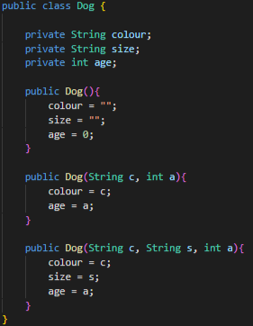For this class, we want to be able to access every attribute, so let’s add a few accessor methods that return their given type. Hypothetically, let’s say every Dog class object has the ability to change its size, we can then make a mutator method in the Dog class called setSize() and add a parameter to set the Dog size. Don’t forget to set all of these methods to public as you will be using them in a driver class outside of the Dog class.
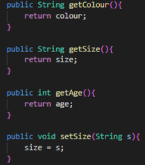The return keyword is used to return a value. The returned data type is put before the name of the method, such as public String getColour(). You do not need to return anything for void methods as void means there is no returned value.
Now, we must instantiate the class to create a new object of the class, let’s use the identifier “albert” to refer to this specific object of the Dog class in a driver class. Let’s also set the initial values of our Dog object to “blue” colour, and 7 age. We will be using the class constructor made in our Dog class to do so.
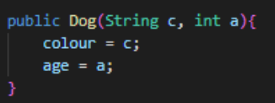turns into
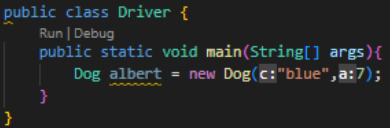To view this information in the console, we need to use System.out.print() or System.out.println() with the accessor method (identifier.method() format) inside the parentheses.
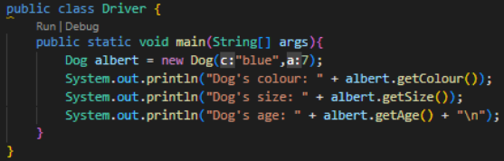the "\n" is used to make a new line on top of the new line made by println()
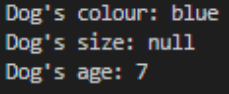We see that the size of albert has not been set, so we can now try using the setSize() mutator method and then use the getSize() accessor method to see the change.
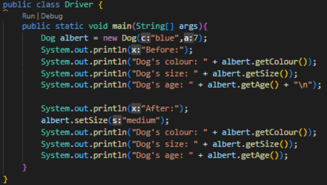 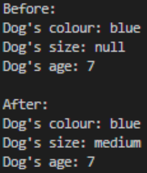Inheritance involves using a hierarchy of superclasses and subclasses. Subclasses inherit behaviours from their superclass, and that allows for a very general class to be subdivided into more specialized classes containing more specific detail. The general class can be called the base class as that is what the rest of the classes are based off of. Relating back to the hierarchy of superclasses and subclasses, any class that is higher in the hierarchy (containing more general information) is called an ancestor class, and any class that is lower in the hierarchy (containing more specific information) is called a descendant class. Also, superclasses may have multiple subclasses, but a subclass may only have one superclass. Similarly to real life, there may be an inheritance of skills of a child from their parent. For example, a child may inherit the ability to play an instrument well, and then have their own skills apart from being inherited from their parent, such as playing soccer.
Here’s an example of basic inheritance being used with a general Parent class and the descendant Child1 and Child2 classes:
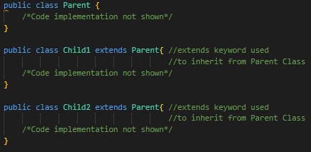The word “polymorphism” is a greek word meaning “many-shaped”. In Java, it would mean that the method executed depends on the type of the object. In Java, you have the ability to override and overload methods.
Overloading methods occur in the same class and are changing the parameters of the methods to create multiple methods of the same method name and possibly different return types. Overriding methods are methods with the same name, type and parameters, but appear in different classes with different bodies.
The super keyword is used to refer to the superclass and can be used to access the superclass’ constructor and methods. The “this” keyword is used when referring to the current class’ constructors and methods.
Encapsulation is the hiding of data from corruption. There are multiple keywords for the encapsulation of instance variables and methods.
public - Allowed to be accessed and modified by any class in the program.
private - Restricted access and modification to the class it is defined in. Useful in “helper” methods of public methods within a class.
When declaring subclass objects, the subclass object that is instantiated must have an “is-a” relationship with the data type it is being assigned to. Then, static and dynamic binding come into effect. Binding is identifying the method body that will be run after the method call when executed at runtime. Static binding is done at compile time which is what happens before running the program. Dynamic binding, also known as late binding, is done at runtime which means that a subclass calls a method in their respective parent class which then calls a method that is overridden in each of the subclasses. Dynamic binding is important as the compiler can not know the address in memory which needs to be used, so that’s why binding is done at runtime.
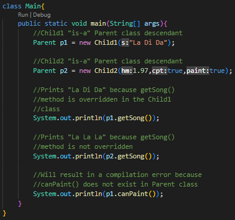Abstraction is the name of using abstract classes and interfaces in Java.
Abstract classes cannot be instantiated into an object as they are just blueprints for subclasses. Abstract classes have two types of methods within them: non-abstract and abstract. Non-abstract methods are methods which have a body of code within them, abstract methods just exist as a blueprint with possible parameters but no body of code within them. The purpose of abstract methods is to be overridden by the abstract class's subclasses. Abstract classes may also have instance variables.
Interfaces are abstract classes that only contain abstract methods, not any non-abstract methods. Also, variables must be declared as public, static, and final inside of interfaces, otherwise, they are not allowed. Since interfaces are abstract classes, they act as blueprints as well for classes that implement them. Unlike classes, interfaces use the keyword “implement” after a class name to implement the interface. You may implement as many interfaces as you want for a class, but you can only have one superclass for a class. This is why interfaces are very useful as multiple interfaces can be implemented for one class which means outlines can be gained from multiple sources.
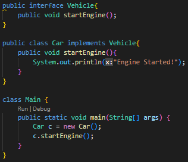